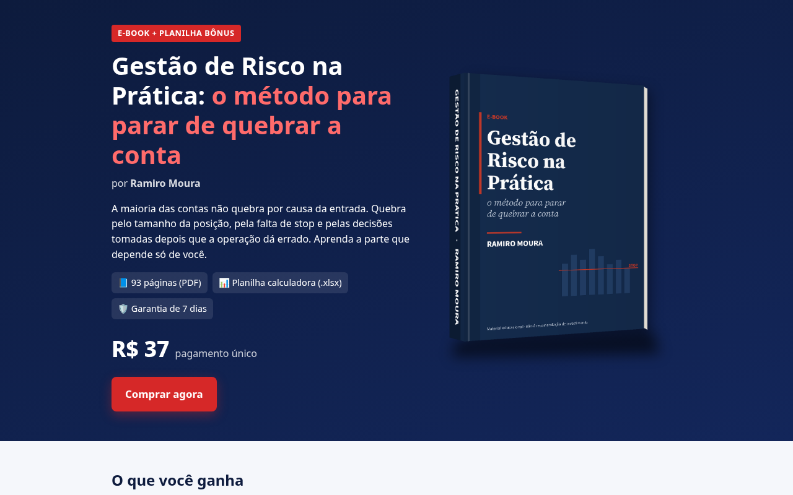
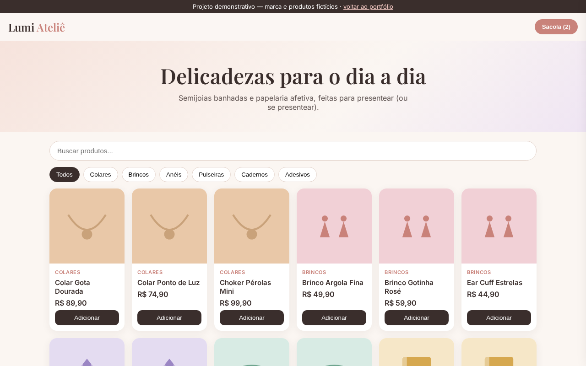
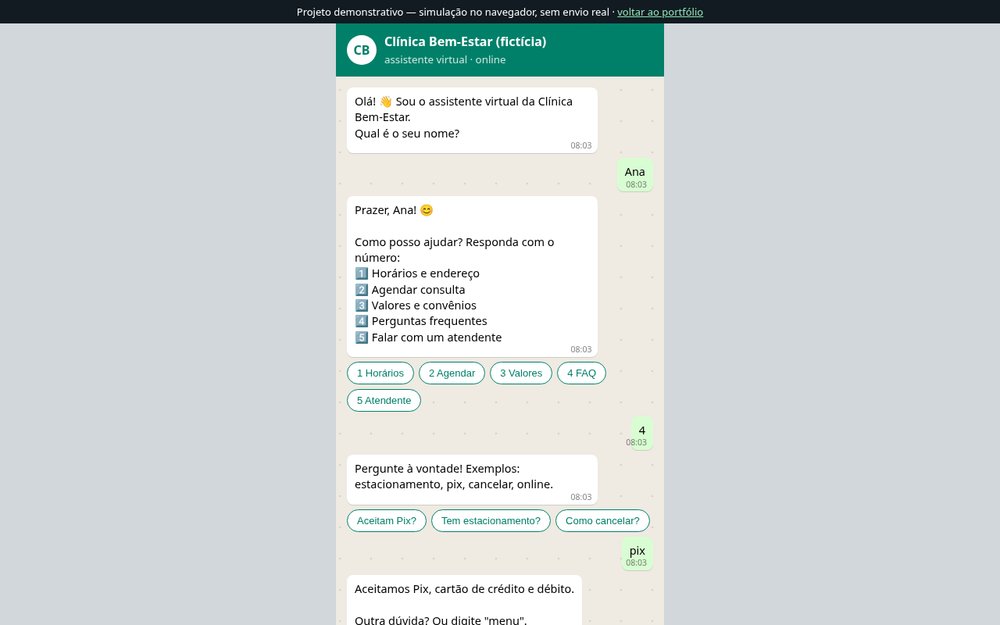
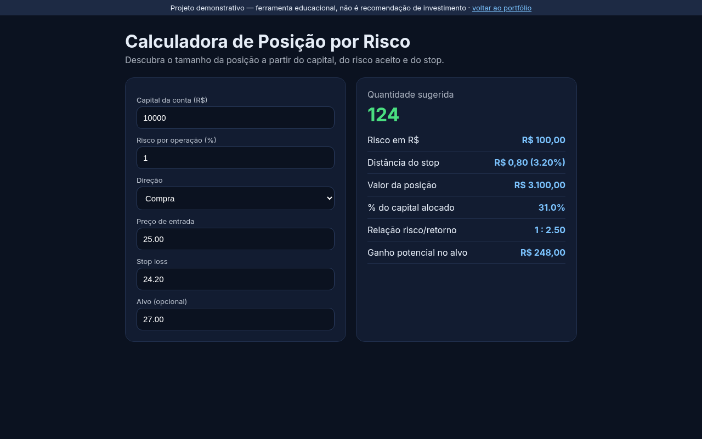

Full-Stack Developer | Web Apps, Automation & AI
Olá! Sou desenvolvedor full-stack e ajudo pequenos negócios e profissionais a venderem e atenderem melhor online — com sites rápidos, lojas virtuais, bots de WhatsApp e automações que economizam tempo. Há mais de 5 anos estudo mercado financeiro e trading: criei o e-book Gestão de Risco na Prática e estou desenvolvendo a plataforma Vertex Orion Trading.
Hi! I'm a Brazilian full-stack developer helping small businesses and professionals sell and serve customers better online — with fast websites, online stores, WhatsApp bots and time-saving automations. I've spent 5+ years studying financial markets and trading: I wrote the e-book Gestão de Risco na Prática and I'm currently building the Vertex Orion Trading platform.
Ver projetosSee projectsFale comigo no 99FreelasContact me on 99FreelasSoluções sob medida, com comunicação clara do início ao fim.
Tailored solutions with clear communication from start to finish.
Landing pages, sites institucionais e lojas responsivas, rápidas e prontas para vender.
Landing pages, business sites and fast, responsive stores built to sell.
Atendimento automático, menus, respostas frequentes e encaminhamento para humano.
Automated support, menus, FAQs and hand-off to a human agent.
Sistemas sob medida: painéis, agendamentos, calculadoras e integrações com APIs e IA.
Custom systems: dashboards, scheduling, calculators, API and AI integrations.
Planilhas inteligentes, Google Apps Script e scripts Python para tarefas repetitivas.
Smart spreadsheets, Google Apps Script and Python scripts for repetitive tasks.
Um processo simples e transparente.
A simple, transparent process.
Entendo seu objetivo, público e prazo, e envio uma proposta clara.
I learn your goals, audience and deadline, then send a clear proposal.
Você vê e aprova uma primeira versão antes do desenvolvimento completo.
You review and approve a first version before full development.
Projeto publicado, testado e com instruções de uso.
Project deployed, tested and documented.
Ajustes e correções incluídos por 30 dias após a entrega.
Fixes and tweaks included for 30 days after delivery.
Projetos demonstrativos (fictícios, feitos para mostrar o que posso construir) e projeto próprio.
Demo projects (fictional, built to showcase my work) and a personal project.

Landing page e e-book autoral sobre gestão de risco para traders.
Landing page and self-authored e-book on risk management for traders.

Vitrine mobile-first com categorias, busca, sacola salva no navegador e pedido via WhatsApp.
Mobile-first storefront with categories, search, persistent cart and WhatsApp checkout.

Simulador com menu, perguntas frequentes, agendamento e encaminhamento para atendente humano.
Simulator with menu, FAQ, scheduling and human hand-off.

Web app que calcula quantidade, alocação e risco/retorno em tempo real.
Web app computing size, allocation and risk/reward in real time.
Envie seu projeto pelo 99Freelas e eu respondo com uma proposta.
Send your project via 99Freelas and I'll reply with a proposal.
Solicitar orçamento no 99FreelasRequest a quote on 99Freelas